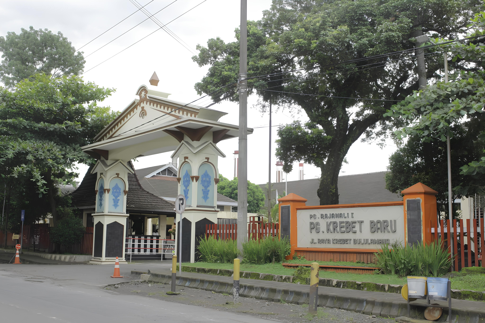
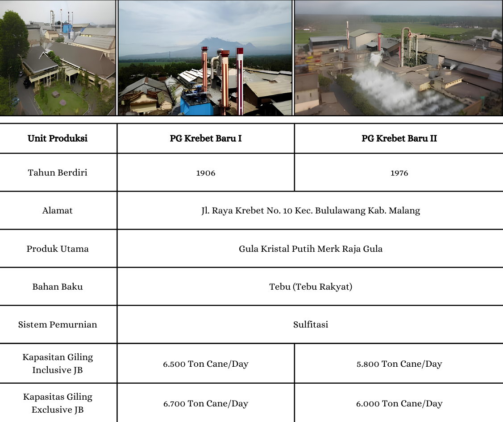
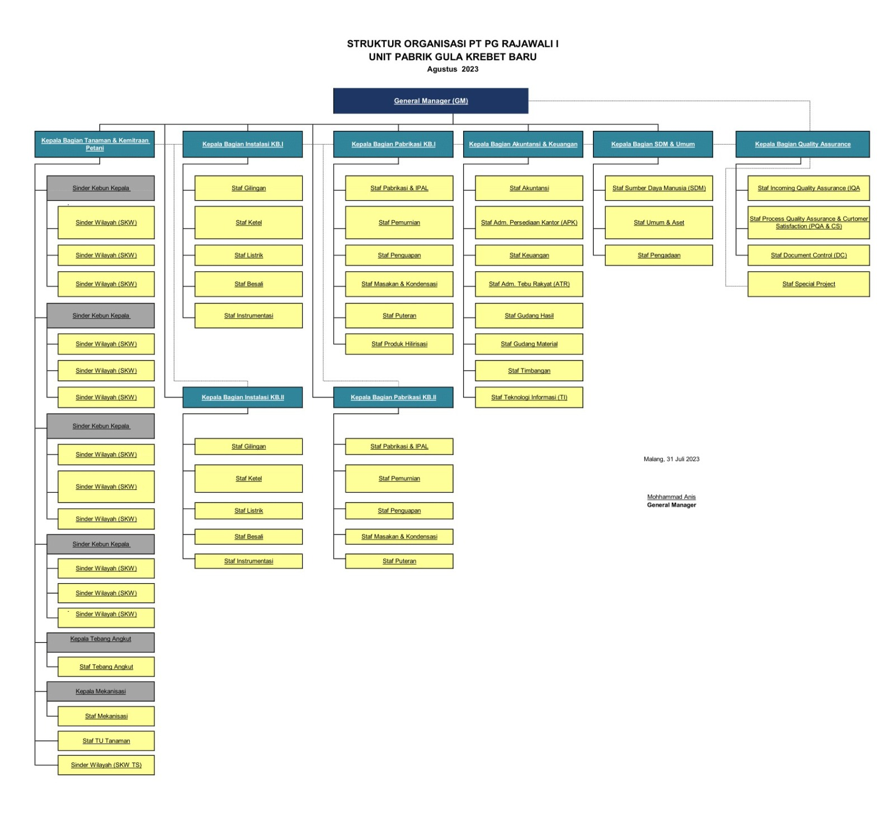

Profil Perusahaan
PT PG Krebet Baru
PT Rajawali Nusantara Indonesia (Persero)
PT. Rajawali Nusantara Indonesia (Persero) atau yang lebih dikenal dengan PT. RNI merupakan sebuah perusahaan BUMN yang bergerak di bidang Agroindustri, Farmasi dan Alat Kesehatan, dan Perdagangan. Didirikan pada tahun 1863 dengan nama NV Handle My Kian Gwan dan sempat beberapa kali berganti nama dan kepemilikan hingga pada tanggal 12 Oktober 1964 diambil alih oleh negara dan diberi nama PT Rajawali Nusantara Indonesia. Kantor I terletk di Jl. Denpasar Raya Kav. DIII Kuningan, Jakarta. Kemudian per 20 Januari 2020 RNI meresmikan kantor II yang terletak di Gedung Waskita Rajawali Tower Lt. UG-5 Jl. M.T. Haryono Kav. 12 Jakarta Timur.
PT PG Rajawali I
PT PG Rajawali I merupakan anak perusahaan dari PT Rajawali Nisantara Indonesia di bidang Agroindustri yang beroperasi di wilayah Jawa Timur. Berletak di JL. Undaan Kulon No 57-59 Surabaya, PT PG Rajawali I berdiri pada tanggal 19 September 1995. Hingga saat ini PT PG Rajawali I memiliki 2 unit usaha yaitu PG. Krebet Baru di Kab. Malang dan PG Rejoagung Baru di Kota Madiun dengan kemampuan total kapasitas giling sebesar 17.200 ton tebu/hari.
PG Krebet Baru
PG Krebet Baru didirikan pemerintah Hindia Belanda lalu dibeli Oei Tiong Ham Concern (OTHC), yang kerap disebut sebagai konglomerasi pertama di Indonesia. Pada era perang kemerdekaan, PG Krebet rusak parah. Pada 1953, bekerjasama dengan Bank Industri Negara, OTHC menghidupkan kembali pabrik gula ini. Namun pada 1961, pemerintah Indonesia mengambil alih semua aset OTHC, termasuk PG Krebet. Pabrik tetap dioperasikan dibawah pengawasan ke Jaksa Agung. Baru pada 1964 pabrik ini diserahkan ke Menteri Urusan Pendapatan, Pembiayaan dan Pengawasan (P3). Oleh Menteri Urusan P3, yang sekarang jadi Kementerian Keuangan, seluruh aset dilimpahkan ke PT Perusahaan Perkembangan Ekonomi Nasional (PPEN) Rajawali Nusantara Indonesia, yang sekarang dikenal sebagai PT Rajawali Nusantara Indonesia.
VISI
Menjadi industri berbasis tebu yang unggul dalam persaingan global
MISI
Meningkatkan kinerja terbaik melalui pencapaian produktivitas dan efektivitas, berorientasi kualitas produk, pelayanan pelanggan yang prima serta menjadi perusahaan yang memiliki komitmen tinggi terhadap kelestarian lingkungan
Melakukan langkah-langkah inovasi, diversifikasi dan ekspansi untuk tumbuh berkembang berkelanjutan
Melakukan langkah-langkah inovasi, diversifikasi dan ekspansi untuk tumbuh berkembang berkelanjutan
INFORMASI UMUM UNIT PRODUKSI

